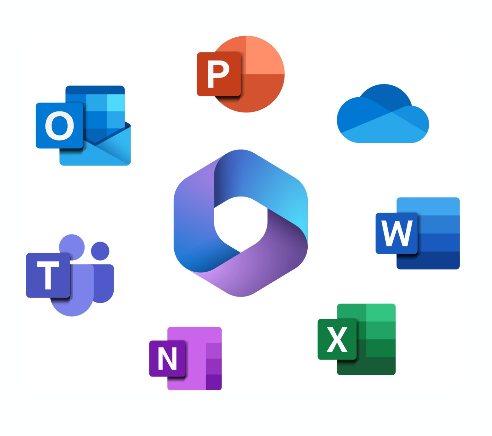

01—04
Rasa
Reducing training time for chatbots by 40 percent. Creating a seamless way to share and hand off training models.
View project02—04
Career Coach
Increased usage of LinkedIn’s Economic Graph by 32%. Increased faculty active sessions by 20%. Signed on 3 universities before GA launch.
View project03—04
30 percent productivity gain by designing an enterprise app for automating 10 workstreams across 4 timezones and 3 user groups.
View project
04—04
Microsoft Education & Copilot
Created frameworks for AI in education and progressive disclosure for Insights. Increased discoverability by 40 percent. Lowered teacher apprehension and skepticism around AI features.
View project